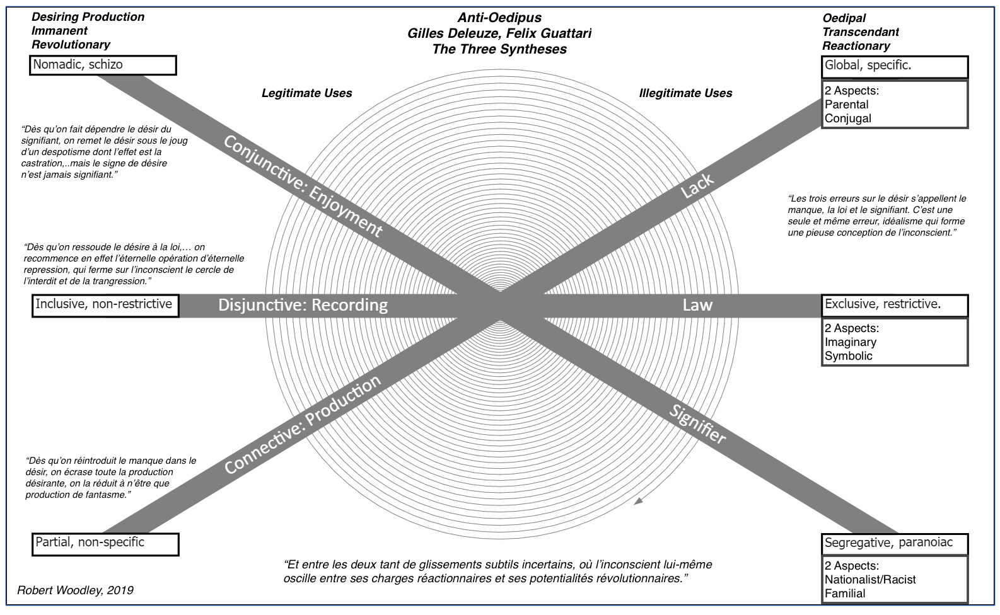

This is my third of 3 articles on the book L'Anti-Oedipe by Gilles Deleuze and Félix Guattari:
The authors posit an immanent criteria of desiring-production that permits a definition of legitimate uses which they call the 3 syntheses.
1 – Synthèse Connective or Production de production
- Concerns Libido
- Partial and non-specific as opposed to Oedipal which is global and specific.
- The BwO (Body without Organs) is anti-production. An example is the machine paranoiaque which repulses organs.
- The operative phrase is 'et puis'. 'and then'.
- The Stanford Encyclopedia of Philosophy associates this synthesis with the physiological register.[1]
2 – Synthèse Disjonctive or Production d'enregistrement
- Concerns the Numen
- Inclusive and non-restrictive.
- The operative phrase is 'soit..soit' or 'either this .. or that'.
- The BwO attracts desiring machines, fetisches.
- This is the Genéalogie Schizophrénique.
- The semiotic register.[1]
The example of the BwO they use is the role of capital in capitalism. It records the 'plus value' created by labor and seems by some magic to have been the agent when it fact it just records.
The act of recording (enregistrement) makes the BwO appear to be productive. They use a play on words: miraculant to indicate miraculous creation. (The cul in miraculant is part of the pun of course).
3 – Machine Miraculante. Production de consommation/consumation.
- Concerns Volupté. or Enjoyment, perhaps.
- Nomadic and polyvocal.
- The operative phrase is "C'est donc", or "C'était donc ça". Which I think means "ah, that's what it was all along" in this context.
- The BwO as egg.
- This is the phase where the subject appears. In the prior 2 phrases it is all machines. The subject appears in relationships of various intensities.
- The psychological register.
Diagramming it out
There are legitimate and illegitimate uses of the 3 Synthèses. And the authors have a very schematic way of treating this, which makes it amenable to being a diagram:

This diagram is based on Adelheid Mers' 3 line matrix template.
The above is mostly dealt with in Chapter 2 of L'Anti-Oedipe.
Here are my translations of the french in the diagram above:
"The three errors concerning desire are called: Lack, Law and Signifier. It is all one and the same error: idealism forming a pious conception of the unconscious."
"Making desire depend on the signifier puts desire under the yoke of despotism whose effect is castration,… but the sign of desire is never signifying."
"Reducing desire to law effectively restarts the eternal operation of eternal repression, which encloses the unconscious in the circle of prohibition and transgression."
"Reintroducing lack into desire crushes all desiring production, reducing it to nothing more than phantasm production."
The quote at the bottom of the diagram:
"And between the two there is a subtle uncertain gliding, where the unconscious itself oscillates between its reactionary burdens and its revolutionary potentials."
 Deleuze Notes: Body Without Organs
Deleuze Notes: Body Without Organs